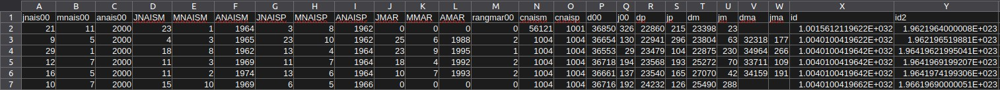
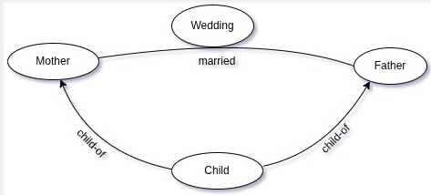
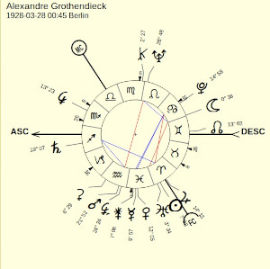
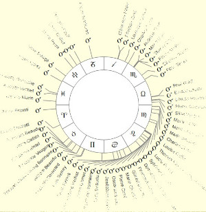
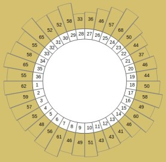

What are we doing ?
Data
We are processing dates, for example the data sent by Didier Castille:
It contains 591 936 lines with 3 or 4 dates:
- Mother birth day
- Father birth day
- Child birth day
- Wedding date

Planets
For each date, we compute planetary positions. These are the ecliptic longitudes of planets at a given date, expressed in degrees, between 0 and 360.

+-----+------------+ | day | 1928-03-28 | +-----+------------+ | SO | 7.577 | | MO | 97.618 | | ME | 340.585 | | VE | 342.739 | | MA | 322.279 | | JU | 14.344 | | SA | 259.157 | | UR | 3.626 | | NE | 146.828 | | PL | 103.775 | | NN | 73.017 | +-----+------------+
Here are the main planets:
| Planet | Sun | Moon | Mercury | Venus | Mars | Jupiter | Saturn | Uranus | Neptune | Pluto |
|---|---|---|---|---|---|---|---|---|---|---|
| IAA code | SO | MO | ME | VE | MA | JU | SA | UR | NE | PL |
| Symbol | ☼ | ☾ | ☿ | ♀ | ♂ | ♃ | ♄ | ♅ | ♆ | ♇ |
Distributions
Then we compute distributions:

For example, we take each planet separately and represent their positions in a single drawing.
Then we group the positions by packets (36 packets of 10° in the example).
This grouping is called a distribution.
Study
A study is always related to a data set, but a data set can be used for several studies.Studies are defined in study files, which permit to specify the commands to run.
The commands to run vary from a study to another, but it's globally always the same process :
- Compute the planetary positions
- Build sub-groups, called splits. In general, there is at least one split containing the whole data set.
- For each split, compute the distributions of planetary positions
- Compute control groups and build expected distributions for each split
- Apply statistical tests to compare observed and expected distributions
- Generate outputs to present the results of the study
- MFC - Mother Father Child - to handle datasets containing birth dates of a couple and a child, and optionnaly wedding dates.
- BD - Birth Death - to handle datasets containing persons withe their birth and death dates.
About
Program started in december 2020 by Thierry Graff to compute a00 distributions for Nick Kollerstrom, who studied if these data show statistical anomalies.Program developed and tested under Linux (Debian). A priori, it should also work under Windows and Macintosh.